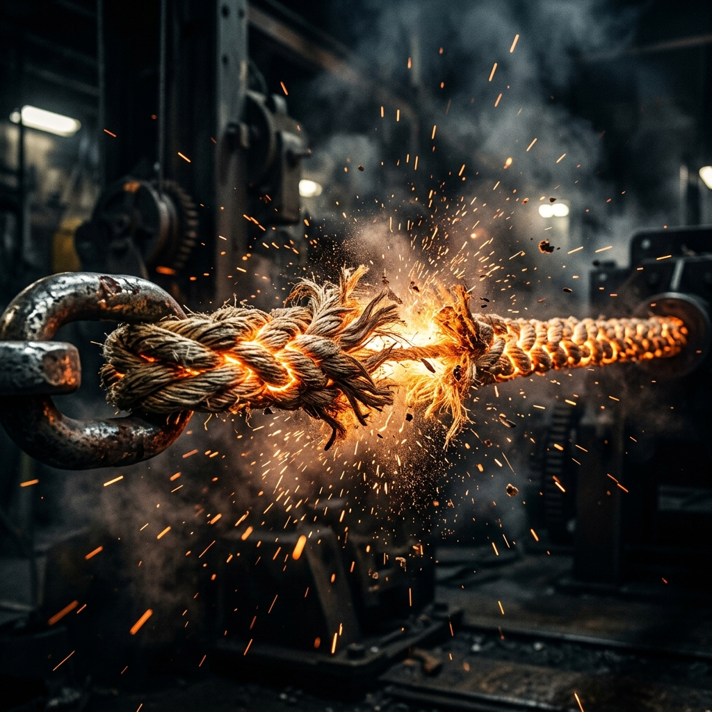

Rahasia Simpul Mematikan Tipe-X
Dipublikasikan: 17 Agustus 2026

Banyak petarung tarik tambang pemula yang meremehkan seni membuat simpul. Tali tambang bukanlah sekadar untaian serat nylon atau rami. Tali tambang adalah perpanjangan dari jiwamu! Dengan cengkeraman yang tepat, seekor semut bisa menarik seekor gajah.
Kemarin, salah satu tetua desa kita berhasil mendemonstrasikan tarikan super yang bisa memutuskan tali setebal lengan orang dewasa. Rahasianya? Tidak ada. Hanya latihan otot jari yang gila-gilaan setiap hari di bawah air terjun.
Review: Tali Tambang Sutera Laba-laba
Dipublikasikan: 16 Agustus 2026
Bulan ini komunitas kita kedatangan sampel tali tambang eksperimental terbaru yang diklaim terbuat dari jaring laba-laba raksasa amazon. Secara tekstur, tali ini sangat lembut di tangan sehingga mengurangi risiko kapalan hingga 90%.
Namun, dalam uji coba kekuatan, tali ini putus saat digunakan oleh tim divisi kelas berat. Kesimpulannya: bagus untuk lomba antar SD, tapi tidak direkomendasikan untuk petarung sejati.
Tantangan Terbuka Dewa Tambang
Dipublikasikan: 15 Agustus 2026
Bagi siapa pun yang merasa memiliki jari sekuat baja dan mental pantang menyerah, Sang Dewa Tambang menantang Anda! Ini bukan sembarang lomba persahabatan yang bisa Anda menangkan dengan hanya menarik sedikit saja sambil tertawa-tawa.
Anda harus mengerahkan segenap jiwa dan menarik paksa tali ini hingga otot Anda menjerit minta tolong. Apakah Anda berani? Atau Anda ingin pulang saja memanggang roti di rumah?
Kompilasi video peserta yang pingsan saat bertanding tahun lalu:
https://www.youtube.com/watch?v=eY52Zsg-KVI
Aturan Baru Federasi Tarik Tambang
Dipublikasikan: 10 Agustus 2026
Federasi Internasional baru saja mengeluarkan larangan penggunaan sarung tangan berbahan amplas atau duri besi dalam setiap turnamen resmi. Panitia akan memeriksa tangan setiap peserta sebelum pertandingan dimulai.